<title>Blind Precise Assembly Reproduction</title>
<meta name="claude:viewport-fit-sides" content="cover">
<meta name="description" content="Results so far of a simulation reproduction of Bronars et al., Blind Precise Assembly (arXiv:2610.23849), written in ASD-STE100 Simplified Technical English.">
<link rel="preconnect" href="https://fonts.googleapis.com">
<link rel="stylesheet" href="https://fonts.googleapis.com/css2?family=Inter:wght@300;400;500;600;700&family=JetBrains+Mono:wght@400;500&display=swap">
<link rel="stylesheet" href="static/css/style.css">
<script type="module" src="static/js/figures/index.js"></script>

<main>

  <!-- ============================================================ hero -->
  <header class="hero">
    <div class="badge">Reproduction report · 21 October 2026, 08:30 UTC · Phases A, B, C, E and G · Phase F code ready</div>
    <h1>Blind Precise Assembly:<br><span class="sub">Results of the Simulation Reproduction</span></h1>
    <p class="authors">Prepared by Yash Chitambar</p>
    <p class="affil">Reproduction of Bronars, Park, Kedia and Agrawal, <i>Blind Precise Assembly: Proprioceptive Sim-to-Real Peg-in-Hole for Diverse Parts</i></p>
    <nav class="links">
      <a class="btn" href="https://arxiv.org/abs/2610.23849">Original paper</a>
      <a class="btn" href="https://younghyopark.me/blind-proprioceptive-assembly/">Original project page</a>
    </nav>
  </header>

  <figure class="teaser">
    <video autoplay muted loop playsinline poster="static/images/teaser_poster.jpg">
      <source src="static/videos/teaser.mp4" type="video/mp4">
    </video>
    <figcaption><b>The blind policy puts the peg in the hole without a camera.</b> Each panel shows a different peg, hole and start position from the evaluation set. The policy did not see these parts in training. The video plays at ¼ of real time. The full insertion takes approximately 0.5 s.</figcaption>
  </figure>

  <section id="summary">
    <h2>Summary</h2>
    <p class="lede">We reproduce the simulation results of the paper on one desktop GPU. The paper trains a robot arm to put a peg into a tight hole. In the training set, the clearance is 1.0 to 1.5 mm on each side. The policy uses only joint angles and joint velocities. It does not use a camera or a force sensor.</p>
    <p>Our blind policy seats the peg on 99.9% of 2,048 test starts. The paper reports 99.4%. Our policy is faster than the paper's policy and moves a shorter distance. A linear probe finds the contact state in the policy's memory, as in the paper. On six families of unseen parts, our blind policy keeps a high success rate. These results agree with the main claims of the paper.</p>
    <p>We use MuJoCo Warp and our own PPO code. One training run of 300 million steps takes approximately 2.3 hours on an RTX 3090 Ti. The blind peg policy also learns on a second robot, the 6-joint YAM arm, with 99.9% training success. The first USB-C run found a grasp problem in the simulation, which we corrected. After the correction, the USB-C policy completes its curriculum and seats 91.5% of the drives at 0.02 to 0.1 mm clearance. We also built the paper's gear-meshing task. The blind gear policy seats 99.94% of 8,192 unseen gear sets and 99.7 to 100% in six unseen gear families, as the paper reports.</p>
    <p>The remaining training now runs on a server with five V100 GPUs. A control run on the server gives the same learning curve as the two local seeds. Thus, the results do not depend on the machine. On the server, the YAM arm now stands on a table, as in the lab. To get first results quickly, Phases C, D and E train one seed for each condition.</p>
    <p>Phase C is complete. We trained the YAM policy with 15 robot conditions and tested each policy under 13 conditions. Sensor noise and encoder quantization do not decrease the success rate. Backlash, latency and gain errors decrease it to 16 to 80%, if the policy did not train with them. Latency must match within one control step of 20 ms. Thus, the next step is to measure the latency and the backlash of the real YAM.</p>
    <p>This version adds videos of successes and failures for each test. It also adds new USB-C results. The joints feel the USB-C contact. But with 20 ms of latency or 1 arcmin of backlash, the USB-C policy seats only 5 to 9% of the drives. A fine-tune with random robot errors is in progress. A chamfer on the port helps. A latch and a side port need their own training. The camera code for Phase F is ready, but the wrist camera does not see the port at the start.</p>

    <div class="tbl">
      <table>
        <thead><tr><th>Phase</th><th>Content</th><th>Status</th></tr></thead>
        <tbody>
          <tr><td>A</td><td>Simulation, policy, PPO and evaluation code. Ten signal checks on the simulation.</td><td><span class="chip ok">Done</span></td></tr>
          <tr><td>B</td><td>Reproduction of the paper's peg results on the Flexiv Rizon 4S arm.</td><td><span class="chip ok">Server seeds done</span> <span class="chip run">2 seeds in local queue</span></td></tr>
          <tr><td>C</td><td>Port to the YAM arm, with sensor noise, backlash and latency.</td><td><span class="chip ok">15 conditions trained and tested</span> <span class="chip run">Randomized noise run</span></td></tr>
          <tr><td>D</td><td>Scale study: part size against clearance.</td><td><span class="chip todo">Starts after the randomized noise run</span></td></tr>
          <tr><td>E</td><td>USB-C insertion on the YAM.</td><td><span class="chip ok">Seed 0 trained: 91.5% at 0.02–0.1 mm</span> <span class="chip ok">Robot errors and variants tested</span> <span class="chip run">Fine-tunes running</span> <span class="chip todo">Server runs start after the randomized noise run</span></td></tr>
          <tr><td>G</td><td>Gear meshing (paper task 2), not in the original plan.</td><td><span class="chip ok">Seed 0 trained and tested</span></td></tr>
          <tr><td>F</td><td>Add RGB and depth cameras to the blind policy.</td><td><span class="chip ok">Code ready</span> <span class="chip todo">Starts after E</span></td></tr>
        </tbody>
      </table>
    </div>
  </section>

  <!-- ============================================================ examples -->
  <section id="examples">
    <h2>Examples of success and failure</h2>
    <p class="claim">Each video shows several test episodes at the same time. A green label is a success. A red label gives the type of failure.</p>
    <p>The evaluation records every episode of a test. Then it keeps the fastest, the median and the slowest success, and up to three episodes of each failure type. The videos play at real time. Select a task, then select a test.</p>
    <figure class="viz" data-fig="demos">
      <div class="viz-tag">Interactive · select a test</div>
      <div class="viz-mount"></div>
      <figcaption><b>Success and failure examples from the test sets.</b> The label on each panel gives the result, the time and the start distance from the hole. The text below the video gives the success rate of the full test and the number of each failure type. "Held out" means that training did not use these parts. Each video comes from a new run of the test. The simulator is not bitwise deterministic, so the numbers can be slightly different from the tables (for example, 99.7% here and 99.9% in Finding 1).</figcaption>
    </figure>
  </section>

  <!-- ============================================================ headline -->
  <p class="finding">Finding 1</p>
  <section id="headline">
    <h2>The blind policy matches the paper</h2>
    <p class="claim">The blind policy seats the peg on 2,046 of 2,048 starts. The median time to seat is 0.64 s.</p>
    <p>All policies use the same 2,048 matched starts. Each start has a peg and a hole that training did not use. At the start, the peg is up to 12.5 mm from the hole centre in x and in y. The peg has a tilt of up to 10° in the hand, and the fixture has a tilt of up to 5°. Each episode has a limit of 5 s. The spiral search knows the true hole position, so it is an optimistic baseline. It has a limit of 15 s.</p>
    <figure class="viz" data-fig="headline">
      <div class="viz-tag">Interactive · hover a bar</div>
      <div class="viz-mount"></div>
      <figcaption><b>Success rate on 2,048 matched starts.</b> The whiskers show the 95% Wilson interval. The black mark shows the paper's value. Hover a bar to see the time to seat, the lateral travel and the paper's value.</figcaption>
    </figure>

    <div class="tbl">
      <table>
        <thead><tr><th>Metric (successful episodes)</th><th class="n">Blind, ours</th><th class="n">Blind, paper</th><th class="n">Visual, ours</th><th class="n">Visual, paper</th></tr></thead>
        <tbody>
          <tr><td>Success rate</td><td class="n">99.9%</td><td class="n">99.4%</td><td class="n">99.95%</td><td class="n">97.2%</td></tr>
          <tr><td>Median time to seat</td><td class="n">0.64 s</td><td class="n">0.80 s</td><td class="n">0.38 s</td><td class="n">0.44 s</td></tr>
          <tr><td>Insertions per minute</td><td class="n">88</td><td class="n">65</td><td class="n">139</td><td class="n">82</td></tr>
          <tr><td>Median lateral travel</td><td class="n">26 mm</td><td class="n">37 mm</td><td class="n">15 mm</td><td class="n">20 mm</td></tr>
          <tr><td>Median time partly inside</td><td class="n">0.28 s</td><td class="n">0.38 s</td><td class="n">0.10 s</td><td class="n">0.22 s</td></tr>
          <tr><td>Median tilt while partly inside</td><td class="n">5.3°</td><td class="n">6.7°</td><td class="n">4.9°</td><td class="n">5.2°</td></tr>
          <tr><td>Median tilt when seated</td><td class="n">1.5°</td><td class="n">1.1°</td><td class="n">1.4°</td><td class="n">1.1°</td></tr>
        </tbody>
        <caption>Paper Table 5 layout. Ours: seed 0, deterministic actions, 2,048 starts. Failed episodes count as 5 s for the insertion rate.</caption>
      </table>
    </div>
    <p>The blind policy has two failures. In one, the policy does not find the hole. In the other, the peg stops partly inside the hole. The visual policy has one failure. In it, the peg stops partly inside the hole.</p>
    <p>On parts like the training parts, the visual policy is faster than the blind policy. It seats the peg in a median of 0.38 s and moves 15 mm. The paper shows the same result: vision helps on familiar parts. Finding 3 shows the opposite result on unseen parts.</p>
  </section>

  <!-- ============================================================ method -->
  <section id="method">
    <h2>Method</h2>
    <p>We follow the paper's setup. The changes are in the section "Differences from the paper".</p>
    <figure class="viz" data-fig="diagram">
      <div class="viz-tag">Interactive · hover a block</div>
      <div class="viz-mount"></div>
      <figcaption><b>Policy architecture.</b> Data moves from left to right. A temporal convolution network (TCN) encodes 30 steps of joint data into a 32-value latent. The actor uses the latent and the current step. The amber blocks are for training only. Hover a block to see its function and its size.</figcaption>
    </figure>
    <div class="cols2">
      <ul class="facts">
        <li><b>Robot.</b> Flexiv Rizon 4S (7 joints) from MuJoCo Menagerie, with a simplified Robotiq 2F-85 gripper.</li>
        <li><b>Control.</b> The action is a joint-target offset of 0.02 rad per unit. A PD controller holds the target for 20 physics steps of 1 ms.</li>
        <li><b>Parts.</b> 1,024 random peg and hole pairs (paper Table 1). Each pair is in 12 of the 12,288 parallel worlds.</li>
      </ul>
      <ul class="facts">
        <li><b>Randomization.</b> Fixture pose, peg pose in the hand, friction, contact stiffness and grip force change for each episode.</li>
        <li><b>Training.</b> PPO, 32-step rollouts, 5 epochs of 20 minibatches, learning rate 3·10⁻⁴. The contact decoder adds a cross-entropy loss.</li>
        <li><b>Success.</b> All 64 points on the peg's bottom edge are inside the opening and less than 1.5 mm above the hole floor.</li>
      </ul>
    </div>
  </section>

  <!-- ============================================================ training -->
  <section id="training">
    <h2>Training takes approximately two hours on one GPU</h2>
    <p class="claim">The blind policy passes 90% training success after approximately 40 million steps.</p>
    <p>Three blind seeds give almost the same curve. Seeds 0 and 1 ran on the local RTX 3090 Ti. Seed 3 ran on a V100 server as a control run (see "The server gives the same results"). The visual policy learns faster in steps. It reaches 100% training success at 50 million steps, and then the run stops. The visual run is approximately 4.5 times slower per step, because each step renders 4,096 wrist images. The visual policy passes 90% after 7.9 million steps. Without the contact decoder loss, the blind policy needs 89 million steps to pass 90%, which is 2.2 times as many. It passes 99% only after 262 million steps, and it ends at 99.1%. The paper reports 2.7 times as many steps. Thus, contact supervision makes training faster, as the paper reports.</p>
    <p>Panel (c) shows the other robot and tasks. The YAM arm learns the peg task faster than the Flexiv arm: it passes 90% after approximately 17 million steps. The blue line is the YAM on the lab table setup (300 million steps, server). The USB-C and gear runs are described below.</p>
    <figure class="viz" data-fig="training">
      <div class="viz-tag">Interactive · hover to read every run</div>
      <div class="viz-mount"></div>
      <figcaption><b>Training success with stochastic actions (paper Figs. 8 and 14).</b> (a) Blind and visual policies. (b) The blind policy with and without the contact decoder loss. (c) The blind peg policy on the YAM arm (old mount and lab table), the first USB-C run with box pads (stopped at 160 million steps), the USB-C run with sphere pads (all five stages, see below) and the blind gear policy. The dotted line is 90%. Use the buttons to show each seed or a log step axis. Hover to read every run at one step.</figcaption>
    </figure>
    <div class="tbl">
      <table>
        <thead><tr><th>Simulated worlds</th><th class="n">1,024</th><th class="n">4,096</th><th class="n">8,192</th><th class="n">12,288</th></tr></thead>
        <tbody><tr><td>Physics steps per second (20 ms control steps)</td><td class="n">18,275</td><td class="n">34,441</td><td class="n">42,959</td><td class="n">42,975</td></tr></tbody>
        <caption>Check A-S9, simulation only. With PPO updates, training runs at 36,000 to 38,000 steps per second.</caption>
      </table>
    </div>
  </section>

  <!-- ============================================================ behavior -->
  <p class="finding">Finding 2</p>
  <section id="search">
    <h2>Blind search is short and direct</h2>
    <p class="claim">The blind policy moves less than the spiral search on 96% of matched starts.</p>
    <p>The spiral search has the true hole position. It still moves a median of 147 mm, because it must cover the area around the hole. The blind policy moves a median of 26 mm. It slides the peg on the plate and feels the edge of the hole through the joints. The paper reports 37 mm for its blind policy and 95 mm for its spiral.</p>
    <figure class="viz" data-fig="travel">
      <div class="viz-tag">Interactive · hover a bin</div>
      <div class="viz-mount"></div>
      <figcaption><b>Lateral distance before the peg is seated (paper Fig. 9).</b> Only starts where all policies succeed are in the histogram. The dashed lines are the medians. Hover a bin to see the number of episodes for each policy.</figcaption>
    </figure>
    <figure class="viz" data-fig="paths">
      <div class="viz-tag">Interactive · select a start, play the timeline</div>
      <div class="viz-mount"></div>
      <figcaption><b>Search paths on the same start.</b> (a) The path of the peg's bottom centre over the hole opening (grey). The open circle is the start. The dashed outline is the peg at the current time. The peg is only 1 to 1.5 mm smaller than the hole on each side, so the two outlines must align almost exactly. (b) The height of the peg's bottom centre. The policy pushes the peg into the plate, finds the hole, and then drops in. Select a start with the buttons. Push Play to move the dots along the paths. Hover panel (b) to read the height and the fraction of the bottom edge inside the hole.</figcaption>
    </figure>
    <figure class="teaser">
      <video autoplay muted loop playsinline poster="static/images/compare_w0_poster.jpg">
        <source src="static/videos/compare_w0.mp4" type="video/mp4">
      </video>
      <figcaption><b>Three policies on start 1.</b> The policies start with the same peg, hole and pose. The video plays at ¼ of real time. The spiral search moves in a circle around the hole. The learned policies move almost directly to the hole.</figcaption>
    </figure>
    <p class="note">Our blind policy never lifts the peg from the plate. The paper's policy lifts the peg in some states (84% probe recall for "lifted"). A possible cause is the weight of the peg. The arm does not compensate for it, so the arm sags approximately 48 mm. Thus, a lift costs a large action.</p>
  </section>

  <!-- ============================================================ generalization -->
  <p class="finding">Finding 3</p>
  <section id="ood">
    <h2>Proprioception generalizes to unseen part families</h2>
    <p class="claim">The blind policy seats more than 85% of parts in five of six held-out families.</p>
    <p>The held-out families come from paper Table 6. They have tighter fits, more slender pegs, other sizes and random convex shapes. Training did not use these families. Each bar has 1,024 starts. The blind policy has a higher success rate than the visual policy in all six families. The difference is 12 to 54 percentage points. The largest difference is for extreme sizes: 85.8% blind against 31.4% visual. In the training range, the two policies are almost equal (99.9% and 99.95%). Thus, the camera helps on familiar parts, but it does not generalize as well as proprioception. The paper reports the same result.</p>
    <figure class="viz" data-fig="ood">
      <div class="viz-tag">Interactive · hover a bar</div>
      <div class="viz-mount"></div>
      <figcaption><b>Success on the training range and on six held-out families (paper Fig. 11, peg row).</b> The whiskers show the 95% Wilson interval. The dashed marks show the paper's values for the same type of policy. Use the button to hide the paper's values. Hover a bar for exact values.</figcaption>
    </figure>
    <p>Our visual policy is better than the paper's visual policy on unseen parts. For example, it seats 63.8% of very slender pegs. The paper reports 40.1%. A possible cause is that our simulated images are simple and have no lighting randomization.</p>
    <p>Random convex parts are the hardest family for both studies. Our blind policy seats 22.8% of them, and our visual policy seats 3.0%. The paper reports 36.2% and 3.9%. These parts have corners and shapes that the cylinder-like training pegs do not have.</p>
  </section>

  <!-- ============================================================ probe -->
  <p class="finding">Finding 4</p>
  <section id="probe">
    <h2>The policy's memory holds the contact state</h2>
    <p class="claim">A linear probe reads the contact mode from the latent with 70% mean recall. The paper reports 70%.</p>
    <p>We record 52,289 states from 1,536 worlds. Each state has a contact mode, for example "near search" or "inside, stuck". We train a linear classifier on half of the worlds and test it on the other half. The latent gives better recall than the current observation alone (53%) or a latent from an untrained encoder (52%). Thus, the history encoder adds contact information.</p>
    <p>In the swap test, we give a state the latent of a different state. If the two states have different modes, the action changes more. Far search and near search are almost the same for the actor (ratio 0.99 to 1.01). A swap between search and inside changes the action 1.2 to 2.2 times as much. The paper reports the same pattern.</p>
    <figure class="viz" data-fig="probe">
      <div class="viz-tag">Interactive · hover a bar or a cell</div>
      <div class="viz-mount"></div>
      <figcaption><b>Probe and latent swap (paper Fig. 10 and Fig. 15).</b> (a) Probe recall for each contact mode, on test worlds. The modes "lifted" and "off the plate" are not shown: "lifted" never occurs, and "off" has only 23 states. (b) Rows are the state that receives the latent. Columns are the mode of the latent. A value of 1 means "no more change than a swap in the same mode". Hover for exact values.</figcaption>
    </figure>
    <figure class="viz" data-fig="heatmap">
      <div class="viz-tag">Interactive · play or drag the timeline</div>
      <div class="viz-mount"></div>
      <figcaption><b>The policy's input during one insertion.</b> Each row is one of the 33 observation values. The colours show the value in standard deviations (blue is low, orange is high). The window shows the last 30 steps (0.6 s) that the encoder reads. The line below shows the fraction of the peg's bottom edge that is inside the hole. Push Play or drag the slider.</figcaption>
    </figure>
  </section>

  <!-- ============================================================ phase A -->
  <section id="checks">
    <h2>The simulation passes its signal checks</h2>
    <p>Before training, we test that the simulation gives a useful contact signal. The research plan has ten checks (A-S1 to A-S10). The table gives the results for the Flexiv arm.</p>
    <div class="tbl">
      <table>
        <thead><tr><th>Check</th><th>Result</th><th>Status</th></tr></thead>
        <tbody>
          <tr><td>A-S1 GPU against CPU</td><td>One 20 ms step: difference ≤ 0.04 mm. Arm alone for 2 s: median 0.048 mm. With a grasped peg, the paths diverge (stick-slip in the grasp is chaotic).</td><td><span class="chip ok">Pass (arm)</span></td></tr>
          <tr><td>A-S2 Drop test</td><td>1,024 of 1,024 pegs drop into their holes and stay. Drift 5 µm.</td><td><span class="chip ok">Pass</span></td></tr>
          <tr><td>A-S3 Step response</td><td>0.05 rad steps settle in 1 cycle. Maximum overshoot 12%.</td><td><span class="chip ok">Pass</span></td></tr>
          <tr><td>A-S4 Gravity sag</td><td>The peg's weight bends joint 2 by 0.045 rad and joint 4 by 0.029 rad.</td><td><span class="chip ok">Report</span></td></tr>
          <tr><td>A-S5 Contact signal</td><td>A vertical push of 0.30 N is visible above joint noise (σ = 10⁻⁴ rad). A lateral push gives a signal that is not monotonic.</td><td><span class="chip warn">Pass (vertical)</span></td></tr>
          <tr><td>A-S6 Drop-in signal</td><td>When the peg drops into the hole, the joint velocities change. Peak-to-noise ratio 3.2.</td><td><span class="chip ok">Pass</span></td></tr>
          <tr><td>A-S7 Leak test</td><td>Changes to the privileged state do not change the actor's input or output.</td><td><span class="chip ok">Pass</span></td></tr>
          <tr><td>A-S8 Determinism</td><td>Two runs from the same state are not bitwise equal. The difference is 10⁻³ after 20 ms.</td><td><span class="chip bad">Fail (engine)</span></td></tr>
          <tr><td>A-S9 Speed</td><td>43,000 steps per second at 8,192 worlds and more.</td><td><span class="chip ok">Report</span></td></tr>
          <tr><td>A-S10 Baselines</td><td>Zero action 2.9%. Random actions 6.1%. Spiral search 77.3%.</td><td><span class="chip ok">Report</span></td></tr>
        </tbody>
        <caption>A-S8 is a property of MuJoCo Warp, not of our code. Thus, we compare distributions of results, not single rollouts.</caption>
      </table>
    </div>
    <div class="gallery wide-block">
      <figure>
        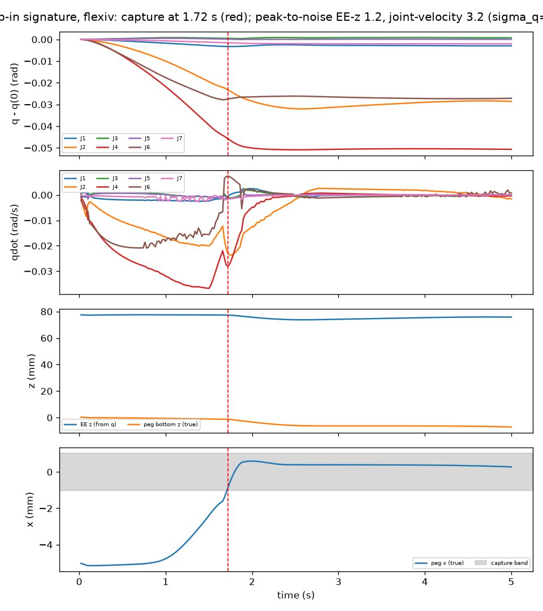
        <figcaption><b>A-S6: the drop-in event is visible in the joints.</b> A script slides the peg over the hole. At 1.72 s (red line), the peg drops in. The joint velocities (second panel) change at the same time.</figcaption>
      </figure>
      <figure>
        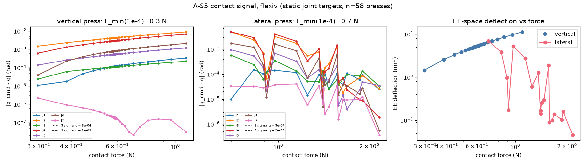
        <figcaption><b>A-S5: joint deflection against contact force.</b> For a vertical push, the deflection increases with the force (left). For a lateral push, the peg turns in the grasp, so the signal is not monotonic (centre).</figcaption>
      </figure>
      <figure>
        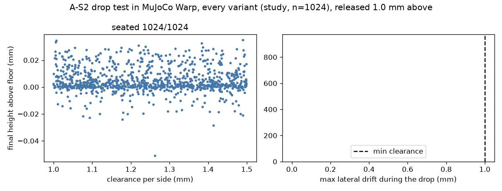
        <figcaption><b>A-S2: drop test.</b> All 1,024 pegs fall into their holes and stay seated. The clearances are 1.0 to 1.5 mm on each side.</figcaption>
      </figure>
      <figure>
        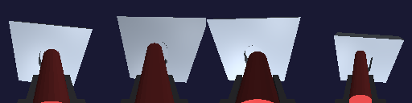
        <figcaption><b>Wrist camera for the visual policy.</b> Four worlds render at the same time on the GPU. Each world has a different part. The renderer gives approximately 160,000 to 200,000 frames per second at 64 × 64 pixels.</figcaption>
      </figure>
    </div>
  </section>

  <!-- ============================================================ phase C / E / G -->
  <p class="finding">Finding 5</p>
  <section id="yam">
    <h2>The blind policy also learns on the YAM arm</h2>
    <p class="claim">On the 6-joint YAM arm, the blind peg policy reaches 99.9% training success. It passes 90% after 16 million steps.</p>
    <p>Phase C uses the same pegs and holes as Phase B. Only the robot changes. The YAM cannot reach the paper's fixture positions, so the fixture is closer to the robot (x 0.25 to 0.45 m). The YAM uses a joint stiffness of 80 N·m/rad on the first three joints and 30 N·m/rad on the wrist joints, and an action scale of 0.04 rad.</p>
    <p>The YAM learns faster than the Flexiv. It passes 90% after 16 million steps, and the Flexiv needs approximately 40 million steps. Its episodes are also shorter: 15 steps (0.3 s) against 36 steps on the Flexiv. A possible cause is the stiffer arm. The peg makes the YAM sag only 14 mm, against 48 mm on the Flexiv. With stiff gripper pads, the drop-in signal on the YAM has a peak-to-noise ratio of 10.7, against 3.2 on the Flexiv.</p>
    <h3>The YAM now stands on a table, as in the lab</h3>
    <p class="claim">On the lab table setup, the YAM passes 90% training success after 16.5 million steps. On the old mount, it needed 17.3 million steps.</p>
    <p>In the first YAM setup, the fixture was 10 to 30 cm below the robot base. The real robot does not work like this. In the lab, the base is on the table top. Thus, we changed the simulation to the lab setup. We use the YAM workcell from RoboSimStudio, without its background:</p>
    <ul class="facts">
      <li><b>Base.</b> The base is level with the table top. It is 0.3475 m behind the table centre and 0.31 m to the right. This is the position of the right arm in the two-arm setup. We use the same position for one arm.</li>
      <li><b>Orientation.</b> The arm reaches along +x, with z up. The YAM models in MuJoCo Menagerie and in RoboSimStudio have the same base frame. Their joint origins agree to approximately 8 mm.</li>
      <li><b>Table.</b> 0.595 × 1.30 m, 0.75 m high. The peg, the gripper pads and the fingertips touch the table, as they touch the fixture.</li>
      <li><b>Fixture.</b> The fixture lies on the table. When the fixture has a tilt, its lowest corner touches the table. The fixture top is 19 to 45 mm above the base. The fixture is 0.25 to 0.45 m in front of the base, as before.</li>
    </ul>
    <p>We did these checks on 2,048 start states. Inverse kinematics found a start pose for all of them. In each world, the lowest corner of the fixture is at the table top. All arm links stay at least 63 mm above the table. A short training run (25 million steps) passed 90% after 18.1 million steps. Old-mount YAM runs from the local machine are not used for comparisons with the new runs.</p>
    <h3>Latency and backlash decide if a policy works on the robot</h3>
    <p class="claim">Sensor noise and encoder quantization do not decrease the success rate. Latency, backlash and gain errors decrease it to 16 to 80% if the policy did not train with them.</p>
    <p>We trained 15 YAM policies on the lab table (seed 0). Each policy trained with one robot condition. Then we tested each policy under 13 conditions, with 2,048 unseen starts for each test. All 15 policies passed 99% training success. Most runs stopped at the minimum of 50 million steps. Each run took approximately 46 minutes on a V100.</p>
    <ul class="facts">
      <li><b>Noise and quantization.</b> Joint noise of 10⁻⁴ and 5·10⁻⁴ rad and 14 or 16 bit encoders have no effect. The base policy keeps 99.8 to 100%.</li>
      <li><b>Backlash.</b> The base policy seats 43 to 47% with 1 to 5 arcmin of backlash. A policy that trained with any of these levels seats 98.5 to 99.6% at all three levels. Without backlash, it loses only 2 to 3 points.</li>
      <li><b>Latency.</b> The base policy seats 16% with one step of latency (20 ms) and 24% with two steps. A policy that trained with one step seats 99% at one step, but only 33% without latency. Thus, the latency in training must match the robot. The runs "allmid" and "allmax" also have latency, so they fail without it (45% and 21%). Under their own conditions, they seat 99.0% and 98.5%.</li>
      <li><b>Gains.</b> At 4 times the training gains, the base policy seats 20%. Most failures are slips. Each gain policy seats 99% at its own gain. No policy covers all gains.</li>
    </ul>
    <figure class="img">
      
      <figcaption><b>Success rate (%) for each training condition (rows) and test condition (columns).</b> YAM on the lab table, seed 0, 2,048 unseen starts in each cell, deterministic actions. Backlash is in arcmin. Latency is in control steps of 20 ms. "allmid": noise 10⁻⁴ rad, 16 bit, 1 arcmin, 1 step. "allmax": 5·10⁻⁴ rad, 14 bit, 5 arcmin, 2 steps. Gains are multiples of the training gains. "own": the policy's own training condition (only for "allmid" and "allmax").</figcaption>
    </figure>
    <p>On the unseen part families, the YAM base policy seats 97.0 to 99.7% in five families. On random convex parts, it seats 0.5%. Most failures there are slips. The Flexiv blind policy seats 22.8% of these parts.</p>
    <p>A new run trains with all conditions at random levels in each world. If this policy covers the full table, Phases D and E use the same randomization. We also wrote a procedure to measure the latency, the backlash and the gains of the real YAM. The measured values will set the ranges.</p>
    <div class="gallery wide-block">
      <figure>
        
        <figcaption><b>The lab table setup.</b> Four start states, each from a different angle. The base is at the back edge of the table. The table extends to the front and to the left of the arm. The fixture lies flat on the table. The peg pose in this image is only a placeholder.</figcaption>
      </figure>
      <figure>
        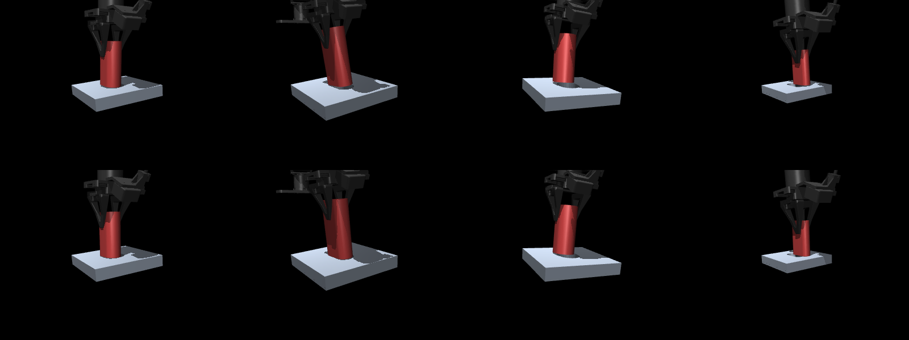
        <figcaption><b>YAM resets, old mount.</b> Top row: four worlds at reset. Bottom row: the same worlds after 0.5 s with zero action. The grasp holds the peg.</figcaption>
      </figure>
      <figure>
        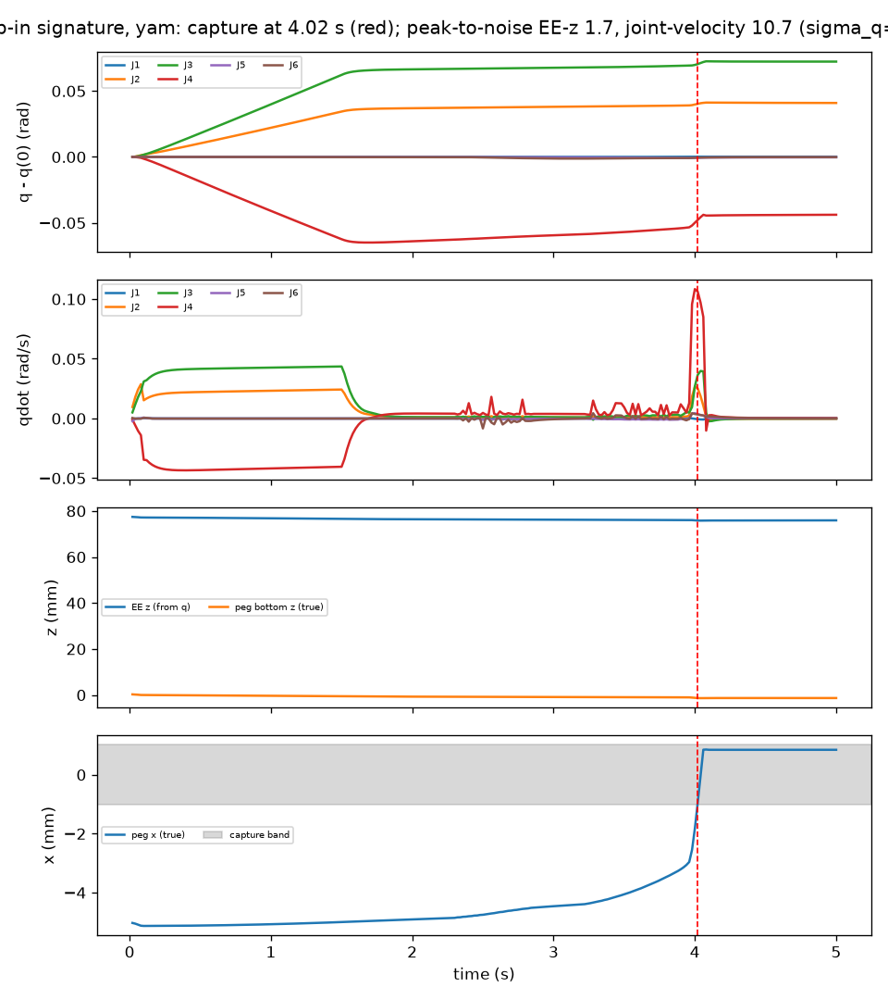
        <figcaption><b>A-S6 on the YAM, stiff pads.</b> The peg drops in at 4.02 s. The joint-velocity peak-to-noise ratio is 10.7.</figcaption>
      </figure>
    </div>
  </section>

  <section id="usbc">
    <h2>After a grasp correction, the blind policy inserts USB-C drives</h2>
    <p class="claim">With sphere pads, the blind USB-C policy seats 91.5% of 2,048 unseen drives at the final clearance of 0.02 to 0.1 mm. Its capture radius (50% success) is 6.0 mm.</p>
    <p>Phase E uses USB-C flash drives on the YAM. The final clearance is 0.02 to 0.1 mm. The curriculum has five stages, and the first stage has a clearance of 0.3 mm. The run stayed at stage 1 because it needs 90% to go to stage 2. We stopped it early and examined the failures.</p>
    <p>87% of the failures are slips: the drive falls out of the gripper, a median of 0.18 s after the start. With zero action, 12.5% of the drives also slip. The cause is missing contact points. When the drive is turned in the hand, its face overlaps the pad face only partly. Then the contact calculation gives an edge or no contact. With a grid of 4 × 4 small spheres on each pad, no drive slips, and the same policy seats 98.3% on stage 1.</p>
    <p>A new run with sphere pads completed all five stages. It reached the final stage after 200 million steps. With 2,048 matched starts for each stage, it seats 99.0%, 98.9% and 98.1% on stages 2 to 4. The plan's gate (80% at 0.05 mm and 2 mm offset) is passed. On the final stage, it seats 91.5%. Most failures come from start offsets of more than 4 mm. The success changes smoothly with the clearance: 93.9% at 0.02 mm and 98.5% at 0.1 mm.</p>
    <h3>The joints feel the USB-C contact</h3>
    <p class="claim">On the YAM, a push of 0.04 to 0.13 N on the drive is visible in the joints. The drop into the port is visible at a joint noise of 10⁻⁴ rad.</p>
    <p>We repeated checks A-S5 and A-S6 with the USB-C drive (plan §11.5). A lateral push of 0.036 N or a vertical push of 0.13 N gives a joint deflection three times larger than the joint noise (σ = 10⁻⁴ rad). For the YAM peg, these values are 1.1 N and 0.8 N. The light grip and the soft gains make the arm move more for each newton.</p>
    <p>For A-S6, a script slides the drive over the port and pushes with 2 N. At 0.3 mm clearance, the drive drops in, and the joint velocities show a peak. The peak-to-noise ratio is 5.0 at σ = 10⁻⁴ rad and 1.0 at 5·10⁻⁴ rad. Thus, the drop is visible at the lower noise, but not at the higher noise. At 0.05 mm clearance, the script cannot align the drive. The trained policy can align it.</p>
    <div class="gallery wide-block">
      <figure>
        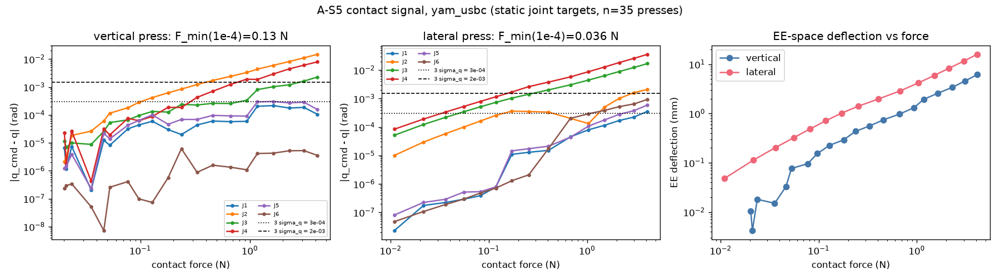
        <figcaption><b>A-S5 with the USB-C drive.</b> Joint deflection against contact force. The dotted line is three times the joint noise at σ = 10⁻⁴ rad.</figcaption>
      </figure>
      <figure>
        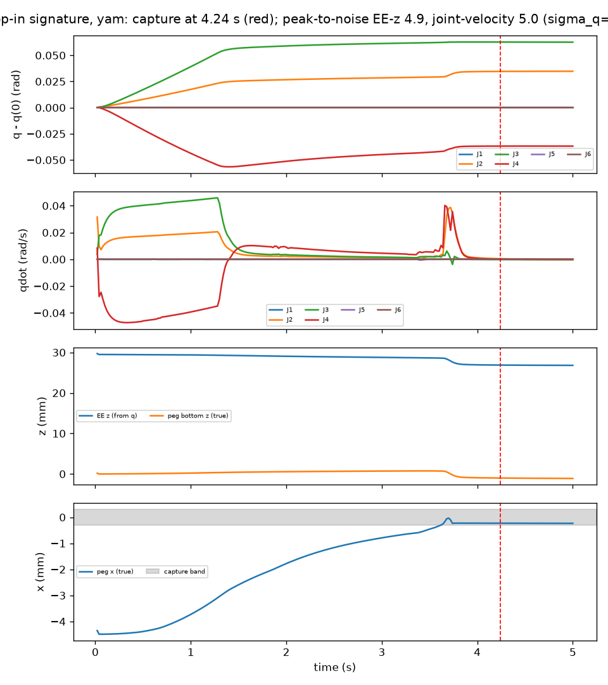
        <figcaption><b>A-S6 with the USB-C drive, 0.3 mm clearance.</b> The drive drops into the port at 3.7 s. Joints 2 and 4 show a velocity peak at that time.</figcaption>
      </figure>
    </div>

    <h3>Robot errors break the USB-C policy</h3>
    <p class="claim">With 20 ms of latency or 1 arcmin of backlash, the USB-C policy seats only 5 to 9% of the drives.</p>
    <p>Phase C showed that latency and backlash break the YAM peg policy. The USB-C fit is 20 to 100 times tighter, so the effect is larger. We tested the USB-C policy with the same errors. It did not train with them. The tests use the lab table, the final clearance (0.02 to 0.1 mm), a median start offset of 3 mm and 2,048 matched starts.</p>
    <div class="tbl">
      <table>
        <thead><tr><th>Test condition</th><th class="n">Trained without errors</th><th class="n">Fine-tuned with random errors</th></tr></thead>
        <tbody>
          <tr><td>No error</td><td class="n">78.0%</td><td class="n" data-ft="base">running</td></tr>
          <tr><td>Latency 1 step (20 ms)</td><td class="n">5.2%</td><td class="n" data-ft="lat1">running</td></tr>
          <tr><td>Latency 2 steps (40 ms)</td><td class="n">5.0%</td><td class="n" data-ft="lat2">running</td></tr>
          <tr><td>Backlash 1 arcmin</td><td class="n">8.6%</td><td class="n" data-ft="bl1">running</td></tr>
          <tr><td>Backlash 3 arcmin</td><td class="n">7.2%</td><td class="n" data-ft="bl3">running</td></tr>
          <tr><td>Joint noise 5·10⁻⁴ rad</td><td class="n" data-ft0="qn5e-4">77.3%</td><td class="n" data-ft="qn5e-4">running</td></tr>
          <tr><td>14-bit encoders</td><td class="n" data-ft0="quant14">78.4%</td><td class="n" data-ft="quant14">running</td></tr>
        </tbody>
        <caption>Success rate, deterministic actions. Without errors, the policy seats 78.0% on the lab table and 91.5% on the old mount, where it trained. The fine-tune starts from this policy and trains 100 million more steps on the lab table. In each world, it draws a new latency (0 to 2 steps), backlash (0 to 5 arcmin), encoder resolution and joint noise at each reset.</caption>
      </table>
    </div>
    <p>Joint noise and 14-bit encoders have no effect, as in Phase C. Latency and backlash are the problem. With them, most failures do not find the port. The search becomes unstable, and the drive slips in the grasp or leaves the housing. The examples above show these failures (USB-C, "1-step latency").</p>

    <h3>Port variants: chamfer, latch and side port</h3>
    <p class="claim">A chamfer on the port helps the policy. A latch and a side port need their own training.</p>
    <p>We built the three variants of the plan (E4 to E6). A chamfer is a 0.2 to 0.5 mm lead-in at 45° on the port edge. A latch is a spring along the port axis. It pushes back with up to 5 to 15 N over the last 1.5 mm. The side port faces the robot, and its housing stands 10 to 15 cm above the table. The YAM can reach all start states there. We tested the USB-C policy on each variant. It did not train with them.</p>
    <div class="tbl">
      <table>
        <thead><tr><th>Port</th><th class="n">Success, no training on the variant</th><th>Main failures</th><th class="n">After fine-tune</th></tr></thead>
        <tbody>
          <tr><td>Normal port (reference)</td><td class="n">77.9%</td><td>Port not found (363 of 2,048)</td><td class="n">—</td></tr>
          <tr><td>Chamfer 0.2 to 0.5 mm</td><td class="n">83.6%</td><td>Port not found (263)</td><td class="n">—</td></tr>
          <tr><td>Latch 5 to 15 N</td><td class="n">28.0%</td><td>Slips (466), partly inside (430)</td><td class="n" data-ft="latch">running</td></tr>
          <tr><td>Port facing the robot</td><td class="n">0.0%</td><td>Left the housing (2,045)</td><td class="n">server</td></tr>
        </tbody>
        <caption>Lab table, final clearance, median start offset 3 mm, 2,048 matched starts. The latch fine-tune trains 100 million steps from the USB-C policy. The side port trains from the start on the server.</caption>
      </table>
    </div>
    <figure class="img wide">
      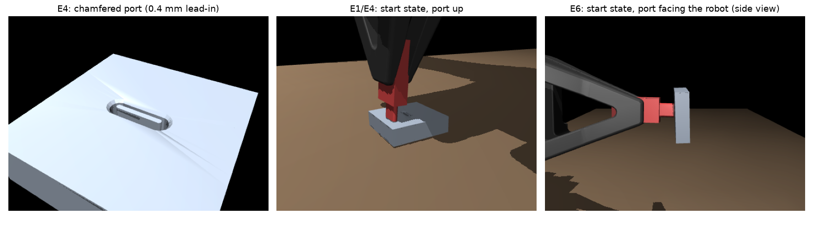
      <figcaption><b>The USB-C variants.</b> Left: a port with a 0.4 mm chamfer. The tongue is in the port. Centre: a start state with the port up. Right: a start state with the port facing the robot.</figcaption>
    </figure>
    <p><a href="https://claude.ai/artifact/CjxtoUaw6MhSsYZLwnPVEh">Read the full USB-C report: the grasp failure, the correction and the new results.</a></p>
    <figure class="img">
      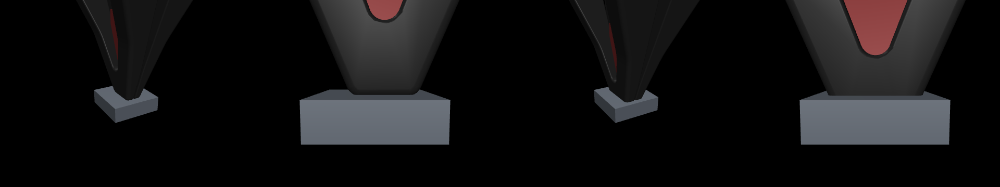
      <figcaption><b>USB-C grasp check.</b> The YAM holds the drive near the top of its body. Thus, the fingertips stay clear of the port housing.</figcaption>
    </figure>
  </section>

  <section id="gear">
    <p class="finding">Finding 6</p>
    <h2>The blind policy also meshes gears</h2>
    <p class="claim">The blind gear policy seats 99.94% of 8,192 unseen gear sets. On six unseen gear families, it seats 99.7 to 100%. The paper reports more than 99.9%.</p>
    <p>The paper has two more tasks: gear meshing and nut threading. We built the gear task to check our setup on a second task. The robot holds a spur gear by a boss on top. The gear must slide down a shaft and mesh with one or two anchor gears. The anchor gears turn on their own hinges. The module is 2.375 to 3.125 mm, with 16 to 24 teeth and 0.4 to 0.6 mm of backlash for each anchor. An episode has a limit of 10 s.</p>
    <div class="tbl">
      <table>
        <thead><tr><th>Check</th><th>Result</th></tr></thead>
        <tbody>
          <tr><td>Drop test, gear aligned with the shaft (n = 256 for each value)</td><td>Tooth-phase error 0: 100% seated. 0.05 pitch: 98.4%. 0.1 pitch: 81%. 0.2 pitch: 10%. 0.3 pitch or more: 0%.</td></tr>
          <tr><td>Anchor hinges</td><td>The anchors turn freely and stop as the hinge damping predicts.</td></tr>
          <tr><td>Backlash</td><td>The measured play is 1.05 times the design value at a light torque (3 mN·m).</td></tr>
          <tr><td>Privileged scripted controller (n = 1,024 unseen gear sets)</td><td>89.0% success: 92.4% with one anchor, 85.3% with two anchors. Median time 4.6 s.</td></tr>
          <tr><td>Baselines (2,048 starts)</td><td>Zero action 0.05%. Random actions 0.73%.</td></tr>
          <tr><td>15-minute smoke training (12 million steps)</td><td>Shaft capture increased from 2% to 50%. Full success stayed below 0.5%.</td></tr>
        </tbody>
      </table>
    </div>
    <p>The early training was slower than for the peg: after 12 million steps, almost no episode was a success. After 75 million steps, the training success was 99.5%, and after 300 million steps it was 100%.</p>
    <div class="tbl">
      <table>
        <thead><tr><th>Test (seed 0, deterministic actions)</th><th class="n">Episodes</th><th class="n">Success, ours</th><th class="n">Success, paper</th></tr></thead>
        <tbody>
          <tr><td>Training range (unseen gear sets)</td><td class="n">8,192</td><td class="n">99.94%</td><td class="n">&gt;99.9%</td></tr>
          <tr><td>Tighter backlash (0.2 to 0.25 mm)</td><td class="n">1,024</td><td class="n">99.71%</td><td class="n">&gt;99.9%</td></tr>
          <tr><td>Taller teeth (1.1 to 1.2 modules)</td><td class="n">1,024</td><td class="n">100%</td><td class="n">&gt;99.9%</td></tr>
          <tr><td>Much taller teeth (1.2 to 1.3 modules)</td><td class="n">1,024</td><td class="n">100%</td><td class="n">&gt;99.9%</td></tr>
          <tr><td>Mild size change (module 2.19 to 2.375 or 3.125 to 3.31 mm)</td><td class="n">1,024</td><td class="n">100%</td><td class="n">&gt;99.9%</td></tr>
          <tr><td>Extreme size change (module 2.0 to 2.19 or 3.31 to 3.5 mm)</td><td class="n">1,024</td><td class="n">99.90%</td><td class="n">&gt;99.9%</td></tr>
          <tr><td>Random tooth shape</td><td class="n">1,024</td><td class="n">100%</td><td class="n">&gt;99.9%</td></tr>
        </tbody>
        <caption>Median time to seat on the training range: 0.90 s (paper: 0.58 s). The 5 failures in 8,192 are 2 slips, 2 gears on the shaft but not in mesh, and 1 gear that left the fixture.</caption>
      </table>
    </div>
    <div class="gallery wide-block">
      <figure>
        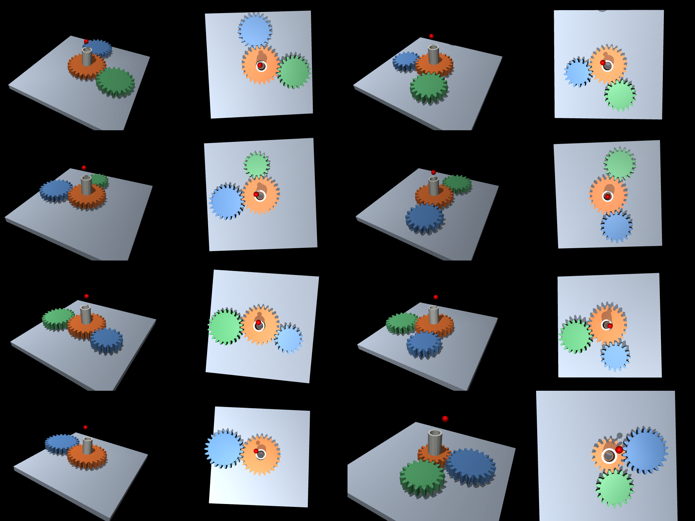
        <figcaption><b>Gear sets.</b> Each world has a different gear set. The orange gear sits on its shaft in mesh with one or two anchor gears (blue, green).</figcaption>
      </figure>
      <figure>
        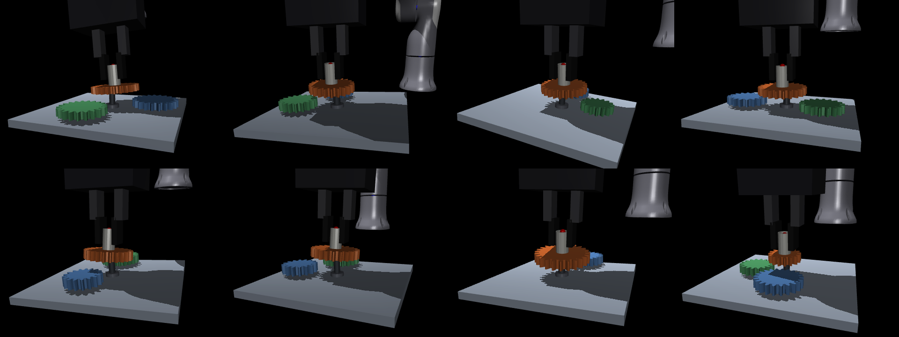
        <figcaption><b>Start states.</b> The gripper holds the gear by its boss. The gear rests on the shaft tip, off the shaft axis, with its teeth out of phase with the anchors.</figcaption>
      </figure>
      <figure>
        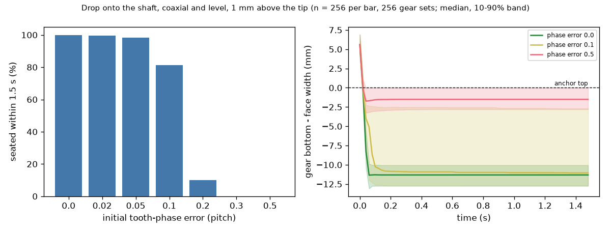
        <figcaption><b>Drop test.</b> A gear that is aligned with its shaft seats only when its teeth are almost in phase with the anchors. Thus, the policy must turn the gear into mesh.</figcaption>
      </figure>
    </div>
  </section>

  <!-- ============================================================ cameras -->
  <section id="cameras">
    <h2>The camera policies are ready to train</h2>
    <p class="claim">The code for Phase F is complete. The wrist camera of the YAM does not see the port at the start, because the drive is in front of it.</p>
    <p>Phase F adds the wrist camera to the USB-C task. The YAM model has the camera of the real robot: an Intel RealSense D405 on the wrist. Five policies use RGB, depth, or both, with or without the joint data. A depth model adds the limits of a real stereo camera. Pixels closer than 7 cm have no value. The noise increases with the square of the distance. Some pixels drop out at random and at edges. Each reset also changes the camera mount (±2 mm, ±2°), the lights and the part colors.</p>
    <p>The images show a problem. The camera is behind the drive and looks along it. Thus, the drive body hides the port. The camera sees the housing behind the drive, at approximately 9 cm. The gripper is closer than 7 cm, so the depth camera does not see it. The port opening is only a few pixels wide at 64 × 64. A camera policy can use the housing edge and the motion of the drive. It cannot see the port, unless we move the camera.</p>
    <figure class="img wide">
      
      <figcaption><b>What the wrist camera sees at six start states, 64 × 64 pixels.</b> Top: RGB with random lights and colors. Bottom: depth after the camera model, in cm. Black pixels have no depth value. The drive is in the centre, and the housing is behind it.</figcaption>
    </figure>
    <p>A test run with 1,024 worlds uses 10.3 GB of GPU memory. The server can thus run 2,048 worlds on one V100. The five runs need approximately 70 GPU hours. They start after Phase E, with approval.</p>
  </section>

  <!-- ============================================================ server -->
  <section id="server">
    <h2>The server gives the same results</h2>
    <p class="claim">A control run on a V100 GPU passes 90% after 37.4 million steps. The two local seeds pass 90% after 39.7 and 41.7 million steps.</p>
    <p>The remaining training needs approximately 800 GPU hours. One desktop GPU is not sufficient for this. Thus, we moved the training to a shared server with five Tesla V100 GPUs (32 GB). The server uses CUDA 12, because the V100 is too old for CUDA 13. The code and the library versions are the same.</p>
    <p>Before the main batch, we trained one known configuration on the server: the blind Flexiv policy with seed 3. The plan gave two pass criteria. Training success must pass 90% between 35 and 50 million steps. It must stay at 99% or more after 150 million steps. The run passed both criteria. After 150 million steps, its lowest training success was 99.2%, and its mean was 99.6%. At 300 million steps, it had 99.8%. MuJoCo Warp is not bitwise deterministic, so we compare curves and not single numbers.</p>
    <div class="tbl">
      <table>
        <thead><tr><th>Measurement</th><th class="n">RTX 3090 Ti (local)</th><th class="n">V100 (server)</th></tr></thead>
        <tbody>
          <tr><td>Blind training, 12,288 worlds, steps per second</td><td class="n">37,500</td><td class="n">20,490</td></tr>
          <tr><td>Blind training, GPU memory</td><td class="n">10.9 GB</td><td class="n">10.7 GB</td></tr>
          <tr><td>Visual training, 4,096 worlds, steps per second</td><td class="n">8,500</td><td class="n">3,922</td></tr>
          <tr><td>Visual training, GPU memory</td><td class="n">—</td><td class="n">28.6 GB</td></tr>
          <tr><td>One blind run of 300 million steps</td><td class="n">2.3 h</td><td class="n">4.1 h</td></tr>
          <tr><td>Control run: steps to 90% (smoothed as in the figure)</td><td class="n">39.7 M, 41.7 M</td><td class="n">39.7 M</td></tr>
          <tr><td>Control run: training success at 300 million steps</td><td class="n">99.8%, 99.7%</td><td class="n">99.7%</td></tr>
        </tbody>
        <caption>Benchmark with PPO updates included. The V100 is approximately 1.8 times slower for blind training and 2.2 times slower for visual training. Each training job uses one GPU.</caption>
      </table>
    </div>
    <p>The batch started at 22:06 UTC on 20 October. It used all five GPUs. A job runner gives one job to each free GPU. Before each start, it makes sure that no other user has the GPU. All 39 jobs of Phases B and C were complete at 07:04 UTC on 21 October. No job failed.</p>
    <div class="tbl">
      <table>
        <thead><tr><th>Run</th><th class="n">Steps</th><th class="n">Test success</th><th>Note</th></tr></thead>
        <tbody>
          <tr><td>B visual, seed 1</td><td class="n">50 M</td><td class="n">99.9%</td><td>Passed 90% at 7.9 M. Seed 0: 7.9 M.</td></tr>
          <tr><td>B visual, seed 2</td><td class="n">50 M</td><td class="n">100%</td><td>Passed 90% at 7.3 M</td></tr>
          <tr><td>B blind, no contact loss, seed 2</td><td class="n">300 M</td><td class="n">99.0%</td><td>Passed 90% at 92.4 M. Seed 0: 88.9 M.</td></tr>
          <tr><td>C YAM base, seed 0, lab table</td><td class="n">300 M</td><td class="n">99.8%</td><td>Passed 90% at 17.3 M</td></tr>
          <tr><td>C YAM, 14 more conditions, seed 0</td><td class="n">50 to 57 M</td><td class="n">98.3 to 100%</td><td>Own condition. See the table in the YAM section.</td></tr>
        </tbody>
        <caption>Test success: deterministic actions, 2,048 unseen starts. Steps to 90%: training success smoothed over 10 iterations.</caption>
      </table>
    </div>
    <p>The visual seeds 1 and 2 confirm seed 0 on the unseen part families. The blind policy has a higher success rate in all six families, for all three visual seeds.</p>
  </section>

  <!-- ============================================================ discoveries -->
  <section id="discoveries">
    <h2>Discoveries</h2>
    <ul class="facts">
      <li><b>One compiled model can hold a different part in each world.</b> MuJoCo Warp keeps the mesh index for each world. We put all 1,024 part meshes in one model and select one in each world. No rebuild is necessary.</li>
      <li><b>MuJoCo Warp calculates static geometry poses only one time.</b> A fixture that is welded to the world does not move when you change its position. The first pegs fell through their plates. We make the fixture a mocap body.</li>
      <li><b>The model build time increases with the square of the number of meshes.</b> 1,024 parts take 36 s. 2,048 parts take 132 s. Thus, we use 1,024 parts and not 12,288.</li>
      <li><b>The arm sags approximately 48 mm under the peg.</b> The joint gains are low (80 N·m/rad), and the controller does not know the peg's weight. The peg always pushes on the plate with its full weight.</li>
      <li><b>Soft contacts are normalized by mass.</b> A light part with a strong grip acts like a soft spring. The gripper pads must be stiff (time constant 2 ms) for 3 to 15 g USB-C drives.</li>
      <li><b>Training needs episodes that are not synchronized.</b> If all worlds start together, the training success changes from 2% to 75% between iterations. Random start phases correct this.</li>
      <li><b>A batched renderer is fast enough for visual RL.</b> 4,096 worlds render in approximately 25 ms. The visual run is slower mostly because of the CNN update.</li>
      <li><b>The visual history must be encoded again after each update.</b> Old embeddings from the previous CNN weights gave log-probability errors to 0.4 nats. When we encode the carried window again, the error decreases to less than 10⁻⁶.</li>
    </ul>
  </section>

  <!-- ============================================================ deviations -->
  <section id="deviations">
    <h2>Differences from the paper</h2>
    <div class="tbl">
      <table>
        <thead><tr><th>Item</th><th>Paper</th><th>This reproduction</th><th>Reason</th></tr></thead>
        <tbody>
          <tr><td>Framework</td><td>mjlab and rsl_rl</td><td>MuJoCo Warp and our own PPO</td><td>mjlab needs MuJoCo 3.11. We use 3.12.</td></tr>
          <tr><td>Gripper</td><td>Robotiq 2F-85</td><td>Two slide fingers with constant-force motors</td><td>The linkage gripper is slow to simulate.</td></tr>
          <tr><td>Different parts</td><td>12,288 (one for each world)</td><td>1,024 (each in 12 worlds)</td><td>Build time</td></tr>
          <tr><td>Hole</td><td>Not stated</td><td>Closed hole with a 5 mm floor</td><td>"Seated" needs a floor.</td></tr>
          <tr><td>Success</td><td>"Entire bottom face seated"</td><td>64 edge points inside, less than 1.5 mm above the floor</td><td>A precise definition</td></tr>
          <tr><td>Arm parameters</td><td>Identified on the real arm</td><td>Menagerie values, no identified friction</td><td>No real arm</td></tr>
          <tr><td>TCN size</td><td>Not stated</td><td>3 Conv1d layers, 64 channels, kernel 5</td><td>Our choice</td></tr>
          <tr><td>Reset</td><td>Not stated</td><td>A pool of 4 start states for each world, solved by GPU inverse kinematics</td><td>Inverse kinematics at each reset made rollouts 3 times slower.</td></tr>
          <tr><td>Seeds, Phases C, D and E</td><td>Plan: 3 seeds</td><td>Seed 0 only, at first</td><td>First results sooner. We add seeds 1 and 2 where a result is close or not expected.</td></tr>
          <tr><td>Run length, Phases C, D and E</td><td>Plan: 300 million steps</td><td>Stop at 99% training success, after at least 50 million steps</td><td>Most YAM runs pass 99% early. Phase B keeps the full 300 million steps.</td></tr>
          <tr><td>YAM mount</td><td>Plan: fixture where the YAM can reach</td><td>Lab table setup from RoboSimStudio</td><td>The simulation must match the real robot cell.</td></tr>
        </tbody>
      </table>
    </div>
  </section>

  <!-- ============================================================ next -->
  <section id="next">
    <h2>Next steps</h2>
    <ul class="facts">
      <li><b>Real YAM.</b> Measure the latency, the backlash, the gains and the encoder noise of the real arm. The procedure takes 1 to 2 hours. A script fits the sim to the step data.</li>
      <li><b>Noise model for D and E.</b> The randomized run tells if one policy can cover all conditions. If it can, D and E use randomized latency, backlash and noise. The real measurements then set the ranges.</li>
      <li><b>Phases D and E.</b> Start on the server after the randomized run. E trains USB-C on the lab table with sphere pads, and the chamfer, latch and side-port variants.</li>
      <li><b>Phase B.</b> Blind seed 2 is complete, and its tests are running. The second run without the contact loss continues after the USB-C runs.</li>
      <li><b>USB-C on the local machine.</b> Three fine-tunes from the USB-C policy: random robot errors, wider starts (up to 6.5 mm in x and y) and the latch. The results go into the USB-C section.</li>
      <li><b>Phase F.</b> The camera code is ready. It starts after E, with approval (approximately 70 GPU hours). First, decide if the camera must move so that it can see the port.</li>
    </ul>
    <div class="tbl">
      <table>
        <thead><tr><th>Work on the server</th><th class="n">Training runs</th><th class="n">V100 GPU hours</th><th class="n">Time on 5 GPUs</th><th>Status</th></tr></thead>
        <tbody>
          <tr><td>Phase B, remaining seeds</td><td class="n">3</td><td class="n">approximately 12</td><td class="n">with Phase C</td><td><span class="chip ok">Done</span></td></tr>
          <tr><td>Phase C, 16 conditions, seed 0</td><td class="n">16</td><td class="n">approximately 25</td><td class="n">9 hours</td><td><span class="chip ok">15 done</span> <span class="chip run">1 running</span></td></tr>
          <tr><td>Phase D, 40 cells, seed 0</td><td class="n">40</td><td class="n">approximately 170</td><td class="n">approximately 1.5 days</td><td><span class="chip todo">Next</span></td></tr>
          <tr><td>Phase E, USB-C and ablations, seed 0</td><td class="n">5</td><td class="n">approximately 30</td><td class="n">approximately 6 h</td><td><span class="chip todo">Next</span></td></tr>
          <tr><td>Phase F, cameras</td><td class="n">5</td><td class="n">approximately 70</td><td class="n">approximately 14 h</td><td><span class="chip todo">Needs approval</span></td></tr>
        </tbody>
        <caption>Upper limits with seed 0 only. Runs that pass 99% training success stop early, so most runs take less time. With three seeds, the same work needs approximately 800 GPU hours.</caption>
      </table>
    </div>
  </section>

  <section id="bibtex">
    <h2>Original paper</h2>
    <div class="bibtex">
      <button class="copy" type="button" id="copy-bib">Copy</button>
<pre><code>@misc{bronars2026blind,
  title         = {Blind Precise Assembly: Proprioceptive Sim-to-Real
                   Peg-in-Hole for Diverse Parts},
  author        = {Bronars, Antonia and Park, Younghyo and Kedia, Kushal
                   and Agrawal, Pulkit},
  year          = {2026},
  eprint        = {2610.23849},
  archivePrefix = {arXiv},
  primaryClass  = {cs.RO},
}</code></pre>
    </div>
  </section>

  <footer>
    This report uses ASD-STE100 Simplified Technical English. All numbers come from simulation. Videos are rendered from logged rollouts with CPU MuJoCo.<br>
    Page template from the research-figures skill. Simulation with MuJoCo and MuJoCo Warp.
  </footer>
</main>

<script>
  document.querySelectorAll('.bibtex .copy').forEach((btn) => {
    btn.addEventListener('click', async () => {
      const code = btn.parentElement.querySelector('code');
      try { await navigator.clipboard.writeText(code.textContent); btn.textContent = 'Copied'; }
      catch { const r = document.createRange(); r.selectNodeContents(code); const s = getSelection(); s.removeAllRanges(); s.addRange(r); btn.textContent = 'Selected'; }
      setTimeout(() => (btn.textContent = 'Copy'), 1500);
    });
  });
</script>

